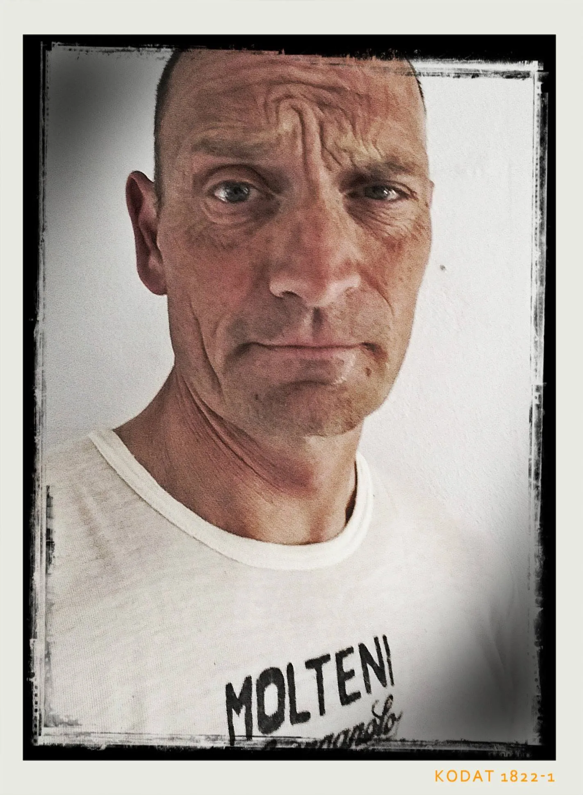

Grejsdalsløbet 2016: Regn, sol, blæst og hagl

Eigil Leegaard, Grane Maaløe og Niels Bjørnsteen stillede til start ved Grejsdalsløbet 2016 på 140 km distancen. Efter ryttermøde i Cassa Bjornsteen, 3 x dobbelt espresso og et godt lag varmecreme var vi klar til at rulle mod start.
Tunge mørke skyer trak sammen over Vejle – og 15 min før start begyndte det at regne. Eigli havde rigeligt med tøj på (men frøs alligevel) mens Niels og Grane havde valgt en mere let påklædning. En mindre tøjkrise blev afværget ved fundet af to plastikposer, der røg ind på maven under Molteni-trøjen.
Starten på Grejsdalsløbet 2016
Starten gik – og det viste sig hurtigt, at det felt vi var kommet i, var meget uhomogent. Efter første bakke kørte en gruppe på ca. 10 mand væk – som vi valgte ikke at følge, da Eigils turbo endnu ikke var fuldt opladet og Granes “Wunderbein” lige skulle finde sig selv.
Det Orange Tog tager føringen i en gruppe på ca 30 ryttere fra Hornstrup til Vejle (ca. 22 km). I Vejle er gruppe kraftigt reduceret, og Eigil får overtalt 3 ryttere til at være med til at tage slæbet. Det går fint frem til Munkebjerg (ca 5 km), hvor alt sprænges i atomer – samtidig med at ryttere fra foranliggende grupper nærmest står stille eller zig-zagger op af bakken.
Munkebjerg: En klassiker
Efter Munkebjerg gik den mod Ankær og Vejle. Det Orange Tog tager føringen i en mindre gruppe – og først i Vejle får vi hjælp af 4-5 stærke rytere.
Kiddesvej spolerer selvfølgelig gruppen – men en ny bliver hurtigt dannet. Her må Det Orange Tog, overraskende nok, igen tage førringen. Eigil’s turbo er nu oppe på 100% – og når Eigil tager en førring, er der sjældent under 10 minutter. Bjørnsteen har gode ben – og Granes “Wunderbein” er nu blevet varme.
Ud af Vejle og over den næste 3 – 4 bakker går det forrygende, Specielt ned af bakke. Her bliver der forceret – og det til trods for, at hidsig haglbyge gør os gennemblødte.
Punktering på Sandagerbakken
Men op af “Sandagergård-bakken” punkterer Grane. Squadra Molteni sætter ny dansk 3-mandshold-rekord i slangeskift – og afsted går det igen.
Det Orange Tog ligger nu på mellemhånd og kæmper med at kører en masse smågrupper op – og forbi dem. Men på “Jenum-bakken” punkterer Niels.
På vej ud i Ådalen får vi følgeskab en en velkørende Fassa Bortolo rytter. Et godt samarbejde etableres. Og inden Nørup kommer yderligere 3-4 ryttere til. Men alle ryttere sover i timen – og Niels og Grane vinder overlegent byskiltespurten i Nørup.
I depot og videre – i en fart
Efter en kort optankning i depotet og videre gennem Ådalen må Det Orange Tog trække. Igen. Et mindre felt opstår bag os – men der er ikke mange som er villige til at trække. Det er Eigil til gengæld. Eigil og Bjørnsteen bliver sat på cruise-control – og afsted går det. På bakkerne får vi skønne tilråb fra vores fans. Tak for det.
På sidste alvorlige bakke inden Vejle (Ravning-bakken) er Grane tæt på krampe, men med kold rutine og Rule #5 kæmper Grane videre, og lægger sig i slipstrømmen af Det Orange Tog.
På vej ind mod Vejle sætte Eigil farten op – og derefter Bjørnsteen – og det lykkedes at køre fra det lille felt, der ligger og lukrerer på Det Orange Tog.

Grejsdalsløbet 2016 var en god og effektiv træning. Der skal finjusteres lidt på formationskørslen – men ellers er vi ved at klar til La Marmotte om 7 uger.